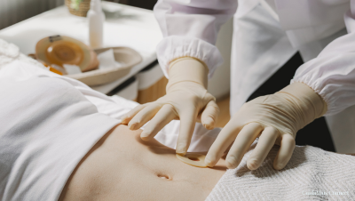
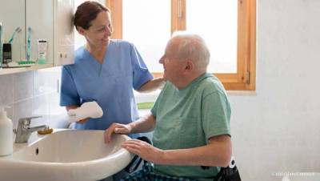
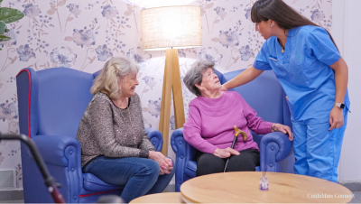
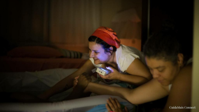
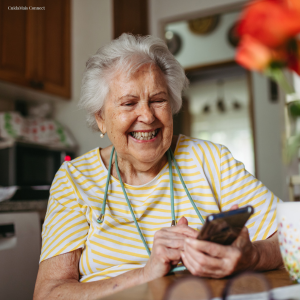
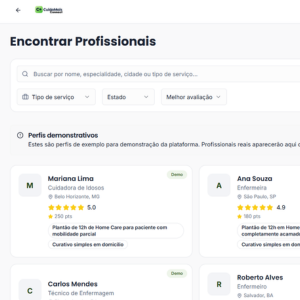

O CuidaMais Connect é uma plataforma que conecta você a profissionais de enfermagem qualificados e verificados para cuidados domiciliares, com segurança, praticidade e confiança.
Situações do dia a dia que pedem o cuidado de um profissional de enfermagem qualificado.
Aplicacao segura de medicamentos injetaveis (intramuscular, subcutanea ou intravenosa) no conforto do seu lar, por profissional habilitado.

Troca e cuidado de curativos simples ou complexos, feridas cirurgicas, ulceras e lesoes, com tecnica adequada e material esteril.

Banho assistido para pessoas com mobilidade reduzida, acamados ou em recuperacao, garantindo higiene, conforto e dignidade.
Cuidado profissional durante a recuperacao em casa apos cirurgias, monitoramento de sinais vitais, drenos e medicacoes.

Acompanhamento para idosos, pessoas em recuperacao ou com condicoes cronicas que precisam de supervisao continua e presenca atenta.
Afericao de pressao, glicemia, temperatura e outros sinais vitais, com registro e acompanhamento para voce e seu medico.
Consultas de enfermagem em diversas especialidades: pre-natal, acupuntura, estomoterapia, estetica e outras areas de atuacao do enfermeiro.

Enfermeira obstetra para acompanhamento durante o trabalho de parto, oferecendo suporte tecnico, emocional e humanizado nesse momento unico.

Crie sua conta gratuitamente na plataforma CuidaMais Connect.

Encontre profissionais de enfermagem verificados na sua regiao, com avaliacoes de outros pacientes.
Entre em contato direto, combine os detalhes e receba o cuidado no conforto da sua casa.
Todos os profissionais passam por verificacao de registro ativo no COREN, documentacao obrigatoria e certidao de antecedentes.
Voce entra em contato diretamente com o profissional, sem intermediarios e com total transparencia.
Encontre profissionais para visitas pontuais, plantoes ou cuidados continuos, conforme sua necessidade.
Profissionais comprometidos com o bem-estar, conforto e dignidade de cada paciente.
Consulte avaliacoes de outros pacientes para escolher o profissional ideal com confianca.
Plataforma supervisionada por enfermeira especialista (Enf. Sabrina Seibert, COREN-RJ 155072-ENF), garantindo qualidade e seguranca.
Cadastre-se agora e encontre o profissional de enfermagem ideal para o que voce precisa.
Criar minha conta